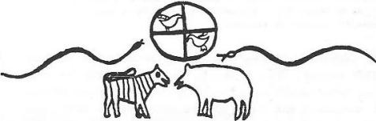
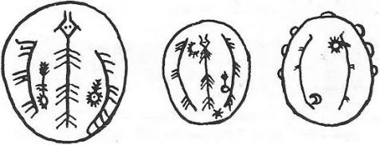

Diğer milletler gibi Türkler de dünyanın bir hayvan üzerinde durduğuna inanmışlardı. Bilhassa İslamiyet’in Orta Asya’ya etkilerinden sonra, yüksek kültüre sahip olan Türkler arasında dünyanın, bir öküzün boynuzlan üzerinde durduğuna dair inanış umumileşmiştir. Yukarıda anlatılan dünyanın yaratılışı ile ilgili efsanede ise Altaylıların dünyayı üç balığın taşıdığına inandıklarını görüyoruz. Bu inanış, daha ziyade Güney Asya kültürlerinin bir özelliğidir. Meselâ eski Hint ananesinde Meru adlı efsanevi bir dağın, bir balık üzerinde durduğunu unutmayalım. Bu inanış Çin Hindistan’ına da yayılmış ve dünyanın Orta-dağı böyle bir balık üzerine oturtulmuştu. Çin ve bilhassa Japon kültürlerinde, yer sarsıntısının sebebi olarak da dünyayı taşıyan böyle büyük bir balığın harekete geçmesi gösterilmişti. Nitekim Müslüman Türkler de yer sarsıntısının sebebini, yeri boynuzları üzerinde tutan öküz’ün kımıldamasına atfetmişlerdi.


Şekil 47: Sibirya Mitolojisinde yeraltı yılanları.
Öyle anlaşılıyor ki, Budizm veya diğer Güney kültürlerinin tesirleriyle bu inanış, Orta Asya halkları arasına da yayılmış ve mitolojide yerini bulmuştur. İslâmiyet, Müslüman Türkler’ de bu inanışı ortadan kaldırırken, Fin-Ugor kavimleri Hıristiyan Rusya'da tesirlerini göstermişler ve Rusya ile Avrupa'da böyle bir an'aneyi yaymışlardı. Meselâ Fin-Ugor kavimlerinden Votyak'Iar yeraltındaki üç balığın, Mordvin'ler ise bir balığın zelzele yaptığına inanıyorlardı. Bu inanış Batıda yaşayan bu kavimlerde yerli bir anane içine bürünmüş ve Budist karakterini kaybetmişti. Yeri taşıyan bu balık inanışı, meselâ Buryat'lar da ise, tam manası ile Budist bir karakterde görünüyordu. Onlara göre Orta Deniz’de yüzen büyük bir balık, aynı zamanda dünyayı da taşırdı. Zelzelelere sebep olduğu kadar, doğum ağrıları vs. gibi şahsî birçok işlerle de o meşguldü.
Yine Çin etkisi ile bazı Sibirya kavimleri balık yerine ejderhayı koymuş ve dünya görüşünü buna göre düzenlemişlerdi. (Şekil: 47)
Altaylıların ceplerinde taşıdıkları 12 burçlu bir takvimin resmini veriyoruz. (Şekil: 46). Ortada, efsanelerimizde sık sık geçen ilk Orta deniz görülüyor. Bu denizin ortasında yaşayan Kurbağa-Kaplumbağa karışımı efsaneleşmiş bir mahlûk yer almış ve iki tarafın da iki büyük balık kuşatmıştır. Bu resim, Çin ve Budist kültürlerinin Orta Asya ananeleri ile karışmış bir örneğidir.
Denizin dibinden "Ak-Ana"nın çıkması ve dünyanın yaratılışı hakkında fikir vermesi: Bizce Vierbitskiy'in topladığı Altay Yaratılış destanının en önemli motifi de budur. Yakut Türklerinin yeri bir ana gibi kabul etmeleri ve ona Yer-Anası demeleri üzerinde uzun uzun duracağız. Yakut mitolojisinde insan ve hayvanlara süt veren, bir Gök- Anası da vardı. Beyaz renkleri, yani herkesin eşini bularak birleştiren hayvan ilahesi1080, 8 iyi kadın ruh1081, cadılar1082, yeni evlileri koruyan tanrıçalar1083 gibi birçok yardımcı Ana Tanrılar da Yakut Panteonunda pek çok idiler. Fakat şimdilik, denizde yaşayan böyle bir Ak-Ana'ya Yakutlar arasında da rastlayamadık. Bilindiği üzere Ürüng-Ayıg-Toyon, yani "Beyaz Yaratıcı" Yakutların en büyük Tanrısı idi. Bu efsanede adı geçen Ak-Ene, yani "Ak-Ana"nın da "Ürüng-Ayığsıt", yani "Beyaz Kadın Yaratıcı" olması da çok muhtemeldi. Bilindiği üzere Yakutların esas Ana Tanrıları Hayat Ağacı'nın kökünde yaşayan ve insanlara can veren kutsal bir Tanrıça idi (Bk. S. 94-7).
Denizin içinden çıkıp da dünyayı yaratmak isteyen Tanrı Bay- Ülgen'e : "Yaptım oldu!" söyle, "Yaptım olmadı!" söyleme, gibi vecizeler söyleyen Ak-Ana'nın bu sözlerinin de manaları pek anlaşılmıyor. Esasen Altay dağların da söylenen Türkçe duaların manası, Verbitskiy gibi büyük araştırıcılar da dâhil, birçok dilci ve etnoğraflar tarafından da anlaşılamamıştır, öyle anlaşılıyor ki, asırlar önce söylenmiş olan bu dualar, XIX. asra kadar Şamanlar tarafından ezberlenmiş olarak ve ifade ettiği manaya da önem verilmeyerek tekrarlanıp duruyorlardı.
Radlof'un topladığı bir efsanede de Su Atası ile ilgili şu bilgiler vardır (Sibiryadan, terc., I, 402).
"Kartaga-Mergen, büyük ve küçük herkesten kız kardeşini sorarsa da, onun nerede olduğunu hiç kimse ona söyleyemez. Kara-kır atına binip kız kardeşinin izinden gitmeğe başlar. Ak-Deniz'in kıyılarından ilerlerken, Deniz-Atası'na şöyle bağırır:
" - Ey, Su Atası babam! Kız kardeşimin nerelere gittiğini biliyor musun? Ey Su Atası!" Su Atası da şöyle cevap verir:
" - Hayır, dostum, ben onu görmedim." Oğlan!
" - Peki, bunu bile bilmiyorsan, burada ne yapıyorsun?" Diye sorar. Su Atası:
" - Çakılları saydım, kumların sayısını bile hesapladım ama, onun nereye gittiğini bilmiyorum!" Oğlan:
" - Eğer (kız kardeşim) denize girdiyse, ne olur onu buluver!" Der. Su Atası da:
" - Eğer denizde ise onu bulurum!" Der ve turna balığı kılığına girerek denizin diplerine dalıp gider. Kartaga-Mergen de dağ sırtlarını takip ederek yoluna devam eder..."
Altay destanındaki diğer önemli motifler: İran mitolojisinde Tekvin, yani yaratılış 6 gün sürmüştü. Bu sebeple en eski İran'da hafta, 6 günden ibaret idi. Altay'da toplanan bu ikinci yaratılış destanın da ise, Tanrı Bay-Ülgen, dünyayı yarattıktan sonra 6 gün uyumuş ve 7’nci günde de, kalkarak, neler yarattığını görmek istemişti. Öyle anlaşılıyor ki bu inanış da Altaylara, Uygur Manihaizm’i yolu ile gelmişti.
33 katlı gök: Bu da Budizm tesiri ile girmiş bir inanç olsa gerektir. Bilindiği üzere, Hint mitolojisindeki Meru dağının dört katı vardı. Bu dağın yarı yerinde ise, 33 Tanrı otururdu. Bunların reisleri de İndra idi. Burada Tanrının oturduğu Altın-Dağ'ın durumu da Meru dağını hatırlatmaktadır.
Verbitskiy'in topladığı Altay Yaratılış destanının içine karışan ikinci destan: Vetbitskiy’in Altay Türkleri arasında topladığı bu yaratılış destanının sonu, Budist an'anelerle tamamlandıktan sonra, yeniden ikinci bir destan başlar. Birinci destanın başında, pek yabancı tesirler yoktur. Altay ve Sibirya masalları da, bunlar gibi yerli an'anelerle başlar; fakat nedense masalın son kısımlarına, birçok yabancı hikâyeler ilave edilirdi. Burada da durum aynıdır. Masal veya efsanelerin baş kısmına pek dokunulmuyordu. Birinci destan Budist dünyalar ve cehennemlerin tarifleri ile sona erdikten sonra su katılmamış yeni ve yerli bir destan yeniden başlar. Burada da esas tema bütün dünyayı kaplayan ilk Okyanus'tur. İkinci olarak toprak gelir, insanoğlu ise Kil’in şekillenmesinden meydana gelmiştir. Bu başlangıç da, İran mitolojisinin tesirleri de açık olarak görülebilir. İran Mitolojisindeki Kil-Şah ile ilgili olarak, insanlığın başlangıçları üzerinde bu kitabın birçok yerlerinde durmuştuk (Bk. S. 380-4).
Kil'den meydana gelen ilk insanın Erlik adını alması ve Tanrı ile rekabete girişmesi de Altay mitolojilerinin yerli motifleridir. Tanrı’nın, ilk olarak yaratmış olduğu insanı beğenmeyerek, yeniden yedi insan daha yaratması, Yakut Türklerinin yaratılış destanlarına benzer (Bk. S. 443-6). İnsanların etlerinin topraktan ve kemiklerinin de kamıştan yaratılmış olmasına gelince, bu da yeni bir efsane motifidir. Potanin'in topladığı bir Altay Yaratılış destanında da, insanın etini topraktan, kemiklerini ise taştan yaratmıştı. Buryat Moğollarının Yaratılış efsanelerinde de durum böyledir.1084 Öyle anlaşılıyor ki Verbitskiy'in topladığı efsane, daha ziyade Batı Türklerinin tesirleri altında bulunuyordu. Çünkü Batı Türklerince yedi rakamı çok önemli idi. Radlof'un topladığı Yaratılış destanında ise Tanrı, ilk olarak dokuz kişi yaratmıştı.
Bu ikinci destan da bundan sonra yine Budist hurafeye gömülecektir. Potanin'in topladığı Altay Yaratılış destanına göre ise Tanrı, insanların boynuna kamıştan bir düdükle üflemek yolu ile can ve ruh vermişti.1085 Burada ise Tanrı, insanın kulaklarına üflemek suretiyle can ve burnuna üfleyerek de akıl vermiştir. Bu iki motife, bu iki efsaneden başkasında rastlamıyoruz. Artık efsanenin bundan sonraki kısımları, Radlof'un topladığı Yaratılış destanlarına benzer. Mandı-Şire ve May-Tere gibi kahramanların rolleri ve vazifeleri, Radlof destanında daha geniş olarak anlatılmıştır.
Yaratılış destanındaki Budist deyimler hakkında: Mai-Tere adı üzerinde, Radlof'un topladığı Altay Yaratılış destanları ile ilgili bölümümüzde durmuştuk. Üstad P. Pelliot'ya göre Budizm'de Bodhisattva Maitreya adlı bu Tanrı, Manihaizm yolu ile Orta Asya lehçelerine Mai-Tara şeklinde geçmişti.1086 Moğolcası Maidarı idi.
Mandı-Şire veya Mangdı-Şire ise, yine Budist Tanrılardan Bodhisattva Manjuçri’den başka bir şey değildi. Kalmuk Dörbötleri bu Tanrıya Mandı-Şiri derlerdi. Yukarıda da söylediğimiz gibi Budistlere göre dünyanın gerçek yaratıcısı bu Tanrı idi. Kaplumbağa şekline girerek dünyayı meydana getirmişti.1087
Han Kurbustan Tenggere deyimi tam manası ile İran mitolojisinin malıdır. Yukarıda da söylediğimiz gibi Orta Asya’ya, Uygur Manihaizm’i yolu ile gelmiş olması çok muhtemeldir. Bu, Hormuzta, Hürmüz, yani Tanrıların en büyüğüdür. Bundan sonra gelen Mangızın-Matmas Burkan, Mangız-Toçiri, Matman-Kara deyimleri pek anlaşılmıyor.
99 âlem veya 99 Tengri de Altay Mitolojisinin motiflerinden biridir. Esas itibarı ile dokuz rakamından türeyen 99 adet Tanrı veya gök. Büyük Tanrı'nın yardımcıları idiler. Moğollarda da başlangıçta bu Tanrıların sayısı 99 idi. Fakat sonradan dış tesirler nedeni ile bu sayı, 54 veya 44 e düşmüştü.1088
Ezre-Kurbustan-Tenggere, orta dünyadır. Ezrua İran mitolojisinin bir terimidir. Bu dünyanın idaresi Belgein-Keretlü-Türün-Musıkay Burkan'a verilmiştir. Kerettik, Keretlik, Türkçede "akıllı" anlamına gelir.1089 Uygur lehçesinde Türüng ise, "gayretli ve çalışkan" demektir.1090 Bu dünyanın cehennemi ise Tüpken-Kara-Tamu, yani "Derin kara Cehennem"dir. Matman Karakçı'nın manası nasılsa "Haydut Matman" anlamına gelmektedir.1091
İnsanların yaşadığı dünyaya, "Kara Dünya", yani Kara Tenggere denmektedir. Bu dünyayı Mai-Tere idare ederdi. Cehennem ise, Erlik'in oğlu Kerey-Han'ın elindedir.1092 Bu Han'ın burun kemiği, bakırdanmış.1093
Biraz da Radlof’un derlediği Yaratılış destanındaki isimler üzerinde duralım. Bu destanda Havva'ya Eçi denir. Eçe sözü, eski Türkçede "Büyük kız kardeş1094", Eçi ise "Yaşlı kadın" anlamına gelirdi.1095